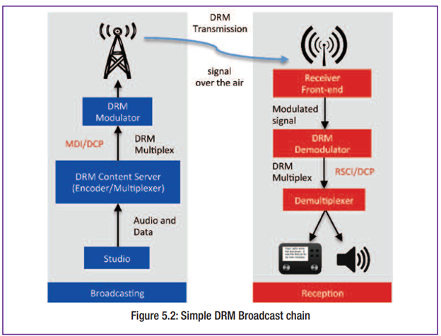
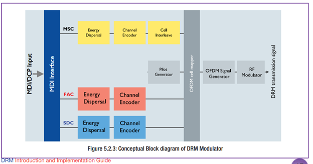
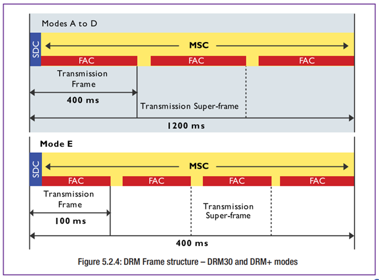
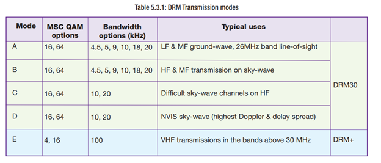
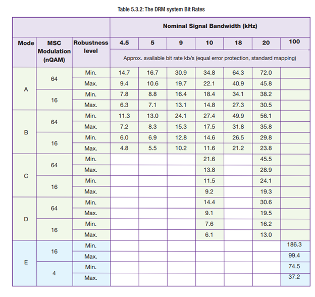
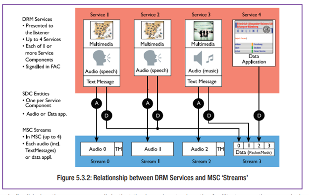
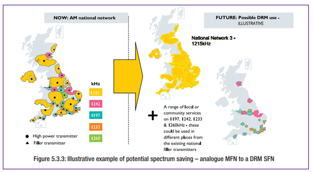
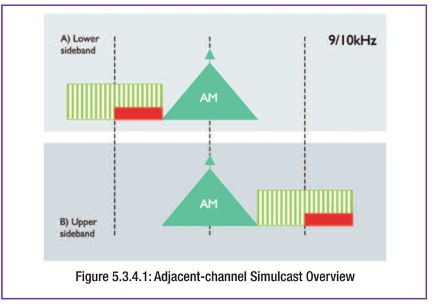
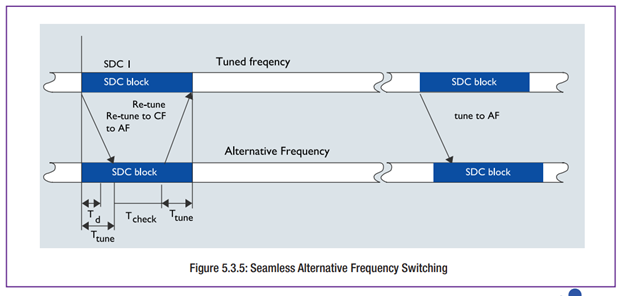
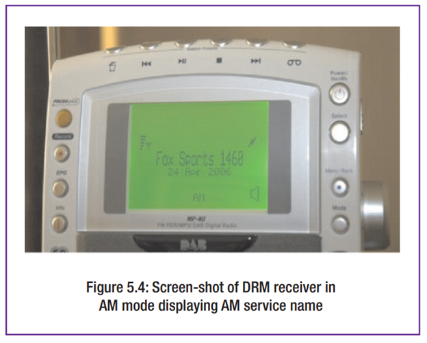

The DRM System
ระบบ DRM
บทนี้ให้คำอธิบายเกี่ยวกับคุณลักษณะที่สำคัญบางประการและบริการที่รองรับของระบบ DRM รวมถึงภาพรวมขององค์ประกอบหลักในห่วงโซ่การกระจายเสียง (Broadcast Chain)
คุณลักษณะหลัก
การแพร่สัญญาณต่ำกว่า 30 MHz
- DRM ใช้ย่านความถี่ AM ที่มีอยู่เดิม (LF, MF, HF)
- รองรับแผนความถี่เดิมที่ใช้ความกว้างช่อง 9 kHz หรือ 10 kHz
- รองรับช่องครึ่งหนึ่ง (4.5 หรือ 5 kHz) และช่องคู่ (18 หรือ 20 kHz)
- มีโหมดความทนทาน (Robustness Modes A ถึง D) ให้เลือกใช้ตามสภาพการแพร่สัญญาณที่แตกต่างกัน
การแพร่สัญญาณสูงกว่า 30 MHz
- ใช้โหมดความทนทาน Mode E
- ความกว้างแบนด์วิธคงที่ที่ 96 kHz (ครึ่งหนึ่งของ FM ปกติ)
- รองรับแบนด์แพลนของ FM ที่มีช่วงห่างความถี่ 100 kHz
- ใช้สเปกตรัมอย่างมีประสิทธิภาพแม้ในย่านความถี่ที่แน่นหนา
- รองรับอัตราข้อมูลตั้งแต่ 37 kbps ถึง 186 kbps
- สามารถให้บริการเสียงได้สูงสุด 3 ช่องต่อหนึ่งการแพร่สัญญาณ
ระบบ DRM ใช้เทคนิคการส่งข้อมูลแบบ COFDM (Coded Orthogonal Frequency Division Multiplexing) ซึ่งแบ่งข้อมูลออกเป็นพาหะความถี่ย่อยจำนวนมาก ช่วยลดผลกระทบจากการเฟด (fading) และสามารถปรับพารามิเตอร์ต่าง ๆ เพื่อให้เหมาะกับสภาพแวดล้อมของคลื่นวิทยุ
ใช้ระบบเข้ารหัสเสียง MPEG xHE-AAC (และรองรับ HE-AACv2 เพื่อความเข้ากันได้กับระบบเดิม) เพื่อให้คุณภาพเสียงสูงในอัตราข้อมูลต่ำ
คุณสมบัติเพิ่มเติม
- รองรับทุกย่านความถี่ที่ใช้ในการออกอากาศ (LF/MF/HF และ VHF Bands I, II, III)
- ใช้งานร่วมกับระบบแอนะล็อกได้
- รองรับทั้งเครือข่ายความถี่เดี่ยว (SFN) และหลายความถี่ (MFN)
- บริการเสียงได้สูงสุด 3 ช่อง พร้อมบริการข้อมูลมัลติมีเดีย เช่น
- ข้อความ (Text Messaging)
- Journaline (บริการข้อมูลแบบโต้ตอบ)
- SlideShow (แสดงภาพ)
- SPI (ข้อมูลสถานีและรายการ)
- มาตรฐานระบบ DRM ทั้งหมดเป็นมาตรฐานเปิด
ห่วงโซ่การกระจายเสียง (Broadcast Chain)
แผนภาพในคู่มือแสดงกระบวนการไหลของข้อมูลจากแหล่งต้นทาง (สตูดิโอหรือศูนย์ควบคุม) ไปยังผู้รับฟัง (DRM Receiver)
องค์ประกอบหลัก 2 ส่วน
- Content Server (เซิร์ฟเวอร์เนื้อหา)
- Modulator (เครื่องมอดูเลต)
ทั้งสองเชื่อมต่อผ่าน Multiplex Distribution Interface (MDI) ซึ่งใช้โปรโตคอล DCP (Distribution and Communications Protocol)

การเข้ารหัสและมัลติเพล็กซ์เนื้อหา DRM
ข้อมูลที่ส่งมี 2 ประเภท
- MSC (Main Service Channel): เสียง + ข้อมูลหลัก
- FAC และ SDC: ข้อมูลสำหรับระบุตัวบริการและการถอดรหัส
- FAC (Fast Access Channel): ใช้ตรวจสอบและเข้าถึงบริการอย่างรวดเร็ว
- SDC (Service Description Channel): ให้รายละเอียดเกี่ยวกับการเข้ารหัส เวลา ความถี่สำรอง (AFS) ฯลฯ
การเข้ารหัสและมัลติเพล็กซ์ทำโดย Content Server ซึ่งจะรวมข้อมูลเป็นรูปแบบที่กำหนดไว้ แล้วส่งต่อให้ Modulator ผ่าน MDI
การกระจายสัญญาณ DRM
- ใช้ MDI + DCP เพื่อรวมเสียง ข้อมูล และพารามิเตอร์การแพร่สัญญาณเข้าด้วยกันเป็นฟีดเดียว
- โดยทั่วไปควรตั้ง Content Server ไว้ที่สตูดิโอ เพื่อคุณภาพเสียงที่ดีที่สุด
- ในกรณีที่จำเป็นสามารถกระจายเสียงแบบแยกส่วนโดยใช้ระบบส่งสัญญาณเดิมได้
การเข้ารหัสและมอดูเลชัน DRM
- Energy Dispersal: สุ่มลำดับบิตเพื่อลดรูปแบบซ้ำ
- Channel Encoder: เพิ่มบิตเพื่อแก้ไขข้อผิดพลาด และแมปข้อมูลเข้าสู่ QAM
- Cell Interleaving: สลับลำดับข้อมูล เพื่อลดผลกระทบจาก fading
- Pilot Generator: สร้างพาหะที่ไม่ใช่ข้อมูล เพื่อให้ผู้รับสามารถเทียบเฟส
- OFDM Cell Mapper: กระจายข้อมูลลงในพาหะย่อยแบบ time-frequency grid
ผลลัพธ์ของการมอดูเลตอาจอยู่ในรูปแบบ
- คลื่น RF ที่ผ่านการมอดูเลตแล้ว
- สัญญาณฐานแถบ I/Q (In-phase และ Quadrature)
- สัญญาณ A-RFP (Amplitude-Reference Frame Polar)

การจัดโครงสร้างสัญญาณแพร่ภาพ
การจัดเฟรมข้อมูล
- ข้อมูล FAC ไม่ถูกรบกวนจาก interleaving เพื่อให้ผู้รับค้นหาบริการได้เร็ว
- ข้อมูล SDC กระจายไปยังพาหะทั้งหมดในช่วงต้นของ “Superframe”
- ช่วยให้ผู้รับสลับคลื่นอัตโนมัติ (AFS) ได้อย่างแม่นยำ
FAC Block
- มีความยาวเฟรม 100 หรือ 400 ms
- มีข้อมูลเกี่ยวกับพารามิเตอร์ช่องและบริการ
- มีการตรวจสอบความถูกต้อง (CRC)
SDC
- อธิบายวิธีถอดรหัส MSC
- สื่อสารความถี่สำรอง เวลา ภาษารายการ และการเปลี่ยนแปลงค่าต่าง ๆ

การตั้งค่าระบบ DRM (Configuring the DRM System)
ส่วนนี้อธิบายถึงวิธีที่องค์ประกอบต่าง ๆ ของระบบ DRM ทำงานร่วมกัน เพื่อให้สามารถออกแบบระบบได้ตามความต้องการเฉพาะของผู้แพร่ภาพ เช่น
- จำนวนช่องบริการเสียง
- การให้บริการข้อมูล
- ระดับความทนทานของบริการ (robustness)
พารามิเตอร์การมอดูเลตและเข้ารหัส (Modulation & Coding Parameters)
โหมดความทนทาน (Robustness Modes)
เพื่อให้ระบบทำงานได้ดีที่สุด พารามิเตอร์ของ OFDM เช่น การเว้นระยะพาหะ (carrier spacing), ช่องว่างกันชน (guard interval) และความหนาแน่นของพาหะนำร่อง (pilot density) จะต้องปรับให้เหมาะสมกับลักษณะของช่องสัญญาณวิทยุ (RF channel)

ระบบ DRM รองรับโหมดการส่งทั้งหมด 5 แบบ ได้แก่ Mode A ถึง E
| โหมด | ความถี่ | การใช้งานทั่วไป |
|---|---|---|
| A | ต่ำกว่า 30 MHz | คลื่นพื้นดิน (ground-wave) เช่น LF, MF หรือการมองเห็นตรง (line-of-sight) ในย่าน 26 MHz |
| B | ต่ำกว่า 30 MHz | การส่งแบบ sky-wave ใน HF และ MF |
| C | ต่ำกว่า 30 MHz | ช่อง sky-wave ที่มีความซับซ้อน เช่น หลายจุดสะท้อน |
| D | ต่ำกว่า 30 MHz | NVIS (Near Vertical Incidence Sky-wave) ที่มีการแพร่คลื่นแบบตั้งฉาก |
| E | สูงกว่า 30 MHz | สำหรับ VHF เช่น FM หรือบริการท้องถิ่น |
ค่าการมอดูเลต (QAM Constellation) และอัตราการเข้ารหัส (Code Rates)
นอกเหนือจากโหมดการส่ง ผู้แพร่ภาพสามารถเลือกพารามิเตอร์ได้อีก เช่น
- QAM แบบ 4, 16 หรือ 64 จุด
- อัตราการเข้ารหัสแบบ Viterbi
การเลือกพารามิเตอร์เหล่านี้จะขึ้นอยู่กับ
- อัตราส่วนสัญญาณต่อสัญญาณรบกวน (SNR) ที่คาดว่าจะได้รับในพื้นที่บริการ
- ความต้องการความทนทานของสัญญาณหรือความจุข้อมูล
| ความถี่ | ตัวเลือก QAM |
|---|---|
| < 30 MHz (Modes A–D) | 16-QAM หรือ 64-QAM |
| > 30 MHz (Mode E) | 4-QAM หรือ 16-QAM |
การมัลติเพล็กซ์บริการและความจุข้อมูล (Service Multiplexing and Payload Capacity)
ภายใต้ข้อจำกัดของพารามิเตอร์การส่ง เช่น QAM และ bandwidth ผู้แพร่ภาพสามารถจัดสรรความจุของช่องบริการหลัก (MSC) ได้อย่างยืดหยุ่น เช่น
- ให้บริการเสียงความคมชัดสูง 1 ช่อง พร้อมบริการเสียงข้อมูลความละเอียดต่ำ เช่น ข่าวหรือจราจร
- หรือให้บริการเสียง พร้อมข้อความ และข้อมูลเสริม
ประเภทบริการในระบบ DRM
-
บริการเสียง (Audio Service)
- มี 1 องค์ประกอบเสียง
- รองรับข้อมูลเสริม (PAD) ได้ถึง 4 รายการ
-
บริการข้อมูล (Data Service)
- มี 1 องค์ประกอบข้อมูล
ระบบ DRM หนึ่งช่องสัญญาณสามารถให้บริการได้ 1–4 บริการ และภายในนั้นสามารถมีได้สูงสุด 3 บริการเสียง
ผู้ใช้เลือกบริการจาก “ชื่อสถานี” (Service Label) ซึ่งฝังอยู่ใน SDC ระบบจะจับคู่กับข้อมูลใน MSC โดยอัตโนมัติ
ระบบยังรองรับการเชื่อมโยงข้อมูลเสียงและข้อมูลเสริมที่แชร์ร่วมกันหลายบริการ เพื่อลดการส่งข้อมูลซ้ำ

ตัวอย่างค่าความเร็วข้อมูลของระบบ DRM (DRM System Bit Rates)
ตารางต่อไปนี้แสดงอัตราข้อมูล (bitrate) ที่เป็นไปได้สำหรับแต่ละโหมดและการมอดูเลต
| โหมด | QAM | ความกว้างแบนด์วิธ (kHz) | ช่วง Bitrate (kbps) โดยประมาณ |
|---|---|---|---|
| A | 64 | 10 | 22.1 – 34.8 |
| B | 16 | 10 | 14.8 – 27.4 |
| C | 64 | 20 | สูงสุด ~72 |
| E | 16 | 100 | 99.4 – 186.3 |

เครือข่ายความถี่เดียวและหลายความถี่ (SFN & MFN)
-
SFN (Single Frequency Network)
- สถานีส่งหลายแห่งใช้ความถี่เดียวกัน
- ช่วยประหยัดสเปกตรัม และสัญญาณเสริมแรงกันในพื้นที่ทับซ้อน
- เหมาะกับบริการครอบคลุมระดับประเทศ
-
MFN (Multi-Frequency Network)
- สถานีส่งแต่ละแห่งใช้ความถี่ต่างกัน
- เครื่องรับสามารถสแกนความถี่สำรองแบบอัตโนมัติ (AFS)
- เหมาะกับพื้นที่ที่ไม่สามารถจัด SFN ได้
ระบบ DRM มีช่องว่างเวลาสั้น ๆ (gap) ที่ไม่มีข้อมูลใน MSC เพื่อให้เครื่องรับมีเวลาสลับคลื่นโดยไม่กระทบเสียงที่กำลังฟังอยู่

โหมดซิมัลแคสต์ (Simulcast)
- ใช้ในกรณีที่ผู้แพร่ภาพต้องการให้บริการแบบดิจิทัลควบคู่กับแอนะล็อก
- โดยไม่ต้องลงทุนในคลื่นใหม่หรือเครื่องส่งใหม่ทันที
- เหมาะกับผู้ที่มีเพียงความถี่เดียว เช่น คลื่น MF
ตัวอย่าง
- ออกอากาศแอนะล็อกในช่วงกลางวัน
- ออกอากาศ DRM เต็มรูปแบบในช่วงกลางคืน
- หรือใช้ความถี่ข้างเคียงในรูปแบบ Multi-Channel Simulcast

การส่งสัญญาณความถี่สำรอง (AFS – Alternative Frequency Signalling)
ระบบ DRM มีความสามารถในการส่งรายชื่อความถี่อื่น ๆ ที่ให้บริการเดียวกัน เช่น
- สลับระหว่าง DRM ↔ DRM ได้แบบไร้รอยต่อ (Seamless AFS)
- หรือสลับไปยังระบบอื่น เช่น FM / AM / DAB ได้แบบทั่วไป (Generic AFS)
ประโยชน์
- ใช้ในกรณีเดินทางระหว่างเมืองหรือประเทศ
- ใช้ในบริการ HF ที่ต้องเปลี่ยนความถี่ตามช่วงเวลาของวัน

การเตรียมเนื้อหาเสียง
เมื่อให้บริการ DRM ด้วย bitrate ต่ำกว่า 30 kbps ต้องหลีกเลี่ยงการบีบอัดเสียงหลายครั้ง (tandem coding) เพราะจะลดคุณภาพของสัญญาณเสียง
แนวทางที่ดี
- ควรเข้ารหัส DRM ที่จุดต้นทาง เช่น สตูดิโอ
- ส่งผ่าน MDI โดยตรงไปยังเครื่องส่ง
- หลีกเลี่ยงการเข้ารหัสซ้ำหลายขั้นตอน เช่น จากดาวเทียม → ระบบตัดต่อ → เครื่องส่ง
ระบบสัญญาณแอนะล็อก AMSS (AM Signalling System)
- ระบบนี้อนุญาตให้สถานี AM แบบดั้งเดิมสามารถส่งข้อมูลสัญญาณดิจิทัลได้
- เครื่องรับสามารถค้นหาสถานี AM เหล่านี้ได้เหมือนเป็นบริการดิจิทัล
- ใช้ได้กับการสลับไปยังคลื่น DRM, FM หรือ DAB ได้โดยอัตโนมัติ
- ความเร็วข้อมูลประมาณ 47 bps
- เผยแพร่เป็นมาตรฐาน ETSI TS 102 386
